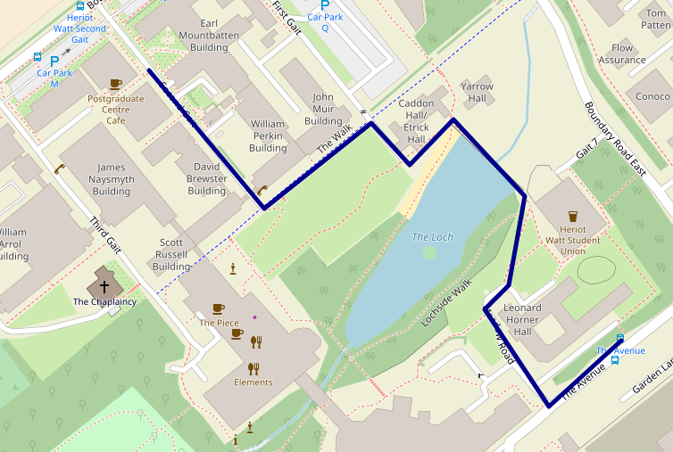
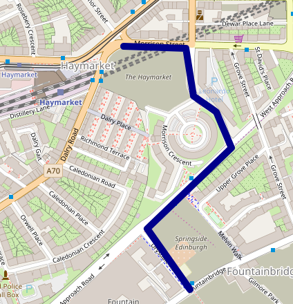

Scottish Programming Languages Seminar
Tuesday 5 June 2018
12:00 - 18:00
Cairn Auditorium, PG G.01, Postgraduate Centre (detailed directions below)
Heriot-Watt University
Please register so that catering can be ordered: doodle poll (mark only the 5 June column).
Any dietary requirements email Rob Stewart (R.Stewart@hw.ac.uk) by Friday 11 May.
Talks
12:00 - Lunch
12:30 - Multi-level parallelism for high performance
combinatorics
Florent Hivert, University
Paris-Sud
[slides]
In this talk, I will report on several experiments around
large scale enumerations in enumerative and algebraic
combinatorics.
I'll describe a methodology used to achieve large speedups in
several enumeration problems. Indeed, in many combinatorial
structures (permutations, partitions, monomials, young
tableaux), the data can be encoded as a small sequence of
small integers that can often efficiently be handled by a
creative use of processor vector instructions. Through the
challenging example of numerical monoids, I will then report
on how Cilkplus allows for a extremely fast parallelization of
the enumeration. Indeed, we have been able to enumerate sets
with more that 10^15 elements on a single multicore machine.
13:00 - AnyDSL: Building Domain-Specific Languages for
Productivity and Performance
Roland Leißa, Saarland
University
Nowadays, the computing landscape is becoming increasingly
heterogeneous and this trend is currently showing no signs of
turning around. In particular, hardware becomes more and more
specialized and exhibits different forms of parallelism. For
performance-critical codes it is indispensable to address
hardware-specific peculiarities. Because of the halting
problem, however, it is unrealistic to assume that a program
implemented in a general-purpose programming language can be
fully automatically compiled to such specialized hardware
while still delivering peak performance.
In this talk, we present AnyDSL. This framework allows to
embed a so-called domain-specific language (DSL) into a host
language. On the one hand, a DSL offers the application
developer a convenient interface; on the other hand, a DSL can
perform domain-specific optimizations and effectively map DSL
constructs to various architectures. In order to implement a
DSL, one usually has to write or modify a compiler. With
AnyDSL though, the DSL constructs are directly implemented in
the host language while a partial evaluator removes any
abstractions that are required in the implementation of the
DSL.
13:30 - Taking Linear Logic Apart
Wen Kokke,
University of Edinburgh
Process calculi based in logic, such as πDILL and CP, provide a
foundation for deadlock-free concurrent programming. However, in
previous work, there has been a mismatch between the rules for
constructing proofsand the term constructors of the
π-calculus. We introduce the Hypersequent Classical Processes
(HCP),which addresses this mismatch by using hypersequents
(collections of sequents) to register parallelism inthe typing
judgements. We prove that HCP enjoys deadlock-freedom and a
series of properties that relate it back to CP.
14:00 - Refreshments
14:30 - The Syntax and Semantics of Quantitative Type
Theory
Bob Atkey, University of Strathclyde.
I will talk about Quantitative Type Theory, a Type Theory that
records usage information for each variable, refining a system by
McBride. The additional usage information means that it is possible to
assign a computational meaning to each term of the theory that is
appropriately "resource sensitive". Practically, this means that we
can compile type theory to environments where resources are
scarce. Formally, it is a realisability semantics over a variant of
Linear Combinatory Algebras. The semantics is defined in terms of
Quantitative Categories with Families, a novel extension of Categories
with Families for modelling resource sensitive type theories.
15:00 - Proof-relevant Horn Clauses for Dependent Type
Inference and Term Synthesis
Franta Farka, Heriot-Watt
University
First-order resolution has been used for type inference for
many years, including in Hindley- Milner type inference,
type-classes, and constrained data types. Dependent types are
a new trend in functional languages. In this paper, we show
that proof-relevant first-order resolution can play an
important role in automating type inference and term synthesis
for dependently typed languages. We propose a calculus that
translates type inference and term synthesis problems in a
dependently typed language to a logic program and a goal in
the proof-relevant first-order Horn clause logic. The computed
answer substitution and proof term then provide a solution to
the given type inference and term synthesis problem.
15:30 - Python Dynamic Source Fuzzing using
Aspects
Tom Wallis, University of Glasgow
Aspect oriented programming is an interesting paradigm which
allows a separation of cross-cutting concerns from a problem
domain. Standard examples of cross-cutting concerns are things
like logging or debugging code, which can be separated out
from core programming logic. We produce an aspect orientation
library — “ASP” — for Python 2, and demonstrate the mechanisms
which help it to work — and then demonstrate that variance can
be treated as a cross-cutting concern, where alterations to
processes can be applied using aspects. We demonstrate that,
using ASP’s mechanisms, process fuzzing libraries can be built
which apply random process mutation as a cross-cutting
concern. We show that this can be used for accurate modelling
of socio-technical behaviour, and then demonstrate some more
advanced process fuzzing aspects which can be used for the
implementation of things like genetic programming.
16:00 - Refreshments
16:30 - Announcement
Jeremy Singer, University
of Glasgow
16:35 - The language of stratified sets, Quine’s NF,
rewriting, and higher-order logic: A brief tour
Jamie
Gabbay, Heriot-Watt University
Russell's paradox is a famous inconsistency in naive set
theory, that there is a set R such that R is a member of
itself if and only if it is not a member of itself. Three
solutions to this problem are: ZF set theory, higher-order
logic, and Quine's NF.
I will motivate and describe Quine's NF, which is a simple
system to define and which depends on a beautiful and
mysterious "stratification condition". I will give an
accessible account of this stratification condition, embed it
into higher-order logic to help make sense of it, and then
approach NF from the point of view of term-rewriting to note
that it has some nice properties.
The interested reader can read a bit more in a paper just
published in LMCS:
http://www.gabbay.org.uk/papers.html#lanssc
https://arxiv.org/abs/1705.07767
The language of Stratified Sets is confluent and strongly normalising.
Directions
This map shows the location of the Post Graduate building (SPLS location):
See full screen
The 34 bus enters the campus via the research park. Get off at
the stop indicated at the red mark above. Alternative bus services are
the 25 and 45 (see below).
SPLS is happening in G.01 (ground floor) of the postgraduate building,
which looks like this:

By bus
Heriot-Watt is served by numerous buses. 25, 34 and 45 serve the
route between the city centre and the university, with the 25 passing
Haymarket Station and all three stopping near Waverley station. The
cost is £1.70 per trip, and you need to have the exact fare.
34 route get off at the penultimate stop on campus. The
Post Graduate building is opposite the Earl Mountbatten (Computer
Science) building.
45 route get off at the penultimate stop on campus (same
as 34).
25 route get off on the final stop and enjoy the walk over
The Loch.
By train
The closest stations to Heriot-Watt are Curriehill (where some
trains to/from Glasgow Central stop), Edinburgh Park (where
trains to/from the west, including some Glasgow trains, and Stirling
trains stop) and Edinburgh Gateway (where trains to/from the
north, including Aberdeen, Inverness and Perth trains stop). There is
no public transport from any of these stations to the university, so
you will need to take a taxi (5-10 minute journey) from the station.
You may be able to pick one up at the station, but it is advisable to
book one in advance.
If your train doesn’t stop at any of these stations, you can get off
at Haymarket and take the 25 bus from there. If you are coming
from the south, you can get the 25, 34 or 45 from
near Waverley.
Social
The upstairs area in the Haymarket Pub has been booked from 18:15. The
pub is opposite the Haymarket train station, easy for onwards rail
travellers.
It's easier to get there using the 25 bus service. To get to a
bus top for the 25 from the Postgraduate centre:

There is a stop very close to the Haymarket pub.
Alternatively, if you wish to use the 34 bus service, then the
Haymarket pub is a short walk:
